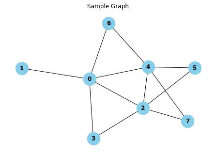
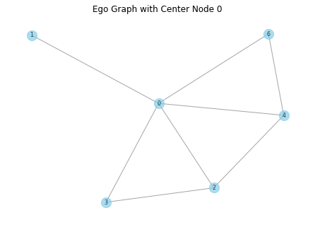
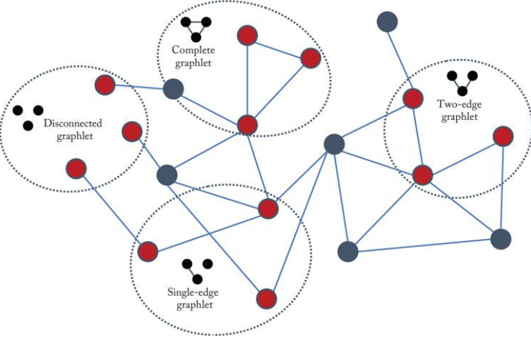

import networkx as nx
import matplotlib.pyplot as plt
# Barabási-Albert 그래프 생성
n = 8 # 노드 개수
m = 2 # 새로운 노드에 연결되는 엣지 수
G = nx.barabasi_albert_graph(n, m)그래프 머신러닝: (2-1) 그래프 통계량과 커널 방법
(GRL) Background and Traditional Approaches: Graph Statistics and Kernel Methods
graph
network
machine learning
Hamilton,W.L. Graph Representation Learning. 2020
그래프 통계량과 커널 방법
Graph Statistics and Kernel Methods
딥러닝과 관련된 그래프(GNN 등)를 알아보기 전에 전통적인 방식의 그래프 통계량을 알아보자.
그래프 데이터를 사용하는 전통적인 분류는 딥러닝 등장 이전의 머신러닝 패러다임을 따른다. 몇 가지 통계량 또는 특징을 추출한 다음, 머신러닝 분류기(예: 로지스틱 회귀)의 입력으로 사용한다.
이 섹션에서는 먼저 중요한 노드 레벨의 피쳐와 통계량을 소개한 다음, 이러한 노드 수준 통계량이 그래프 레벨 통계량으로 일반화되고 그래프 상에서의 커널 방법을 설계하는 방법에 대해 논의한다.
그래프 커널(Graph Kernel)은 두 개의 그래프 간의 유사성을 계산하기 위한 도구
Node-level 통계량과 피쳐(features)
# 시각화
pos = nx.spring_layout(G) # 그래프 레이아웃 정의
# 노드 및 엣지 그리기
nx.draw(G, pos, with_labels=True, node_size=700, node_color="skyblue", font_size=12, font_weight="bold")
plt.title("Sample Graph")
plt.show()
Node degree
한 노드에 연결된 엣지 수
\[d_u = \sum_{v \in V}A[u,v] \quad \text{for } u \in \mathcal{V}\]
- node degree는 전통적 기계학습 모델에서 가장 유익한 정보 중 하나이다.
- 하지만, 한 노드와 연결된 다른 노드들의 중요성은 노드의 degree에 반영되지 않는다. 즉, 두 노드가 같은 degree를 갖더라도 이웃의 중요도에 따라 중요도가 다를 수 있다.
# Node degree 구하기
degree = dict(G.degree())
print("Node degree:")
print(degree)Node degree:
{0: 5, 1: 1, 2: 5, 3: 2, 4: 5, 5: 2, 6: 2, 7: 2}Node centrality
위세 중심성 (eigenvector centrality)
- node degree와 달리, 노드의 이웃들의 중요도까지 고려하는 방법이다.
\[e_u = \frac{1}{\lambda}\sum_{v \in V}A[u,v] e_v, \quad \forall u \in \mathcal{V}\]
식처럼 recursive한 성질을 가진다.
단, 위의 식을 다시 쓰면 벡터 \(\mathbf{e}\)에 대해 \(\lambda \mathbf{e} = A \mathbf{e}\)와 같다. 즉, centrality는 인접행렬의 eigenvector이다. 양의 centrality 값을 가정하면, Perron-Frobenius Theorem을 적용하여 \(\mathbf{e}\)를 구할 수 있다.
또한, eigenvector centrality느 그래프에서 무한 랜덤워킹할 때 해당 노드에 도착할 확률이라고도 볼 수 있다.
- \(\mathbf{e}^{(t+1)} = A \mathbf{e}^{(t)}\) : power iteration
매개 중심성 (betweenness centrality): 한 노드가 다른 두 노드 사이의 최단 경로에 있을 빈도
근접 중심성 (closeness centrality): 한 노드와 다른 모든 노드 사이 최단거리들의 평균
차수 중심성(degree centrality): 해당 노드의 직접적인 연결 수를 기준으로 측정
# Degree centrality 구하기
degree_centrality = nx.degree_centrality(G)
print("Degree centrality:")
print(degree_centrality)
# Betweenness centrality 구하기
betweenness_centrality = nx.betweenness_centrality(G)
print("\nBetweenness centrality:")
print(betweenness_centrality)
# Closeness centrality 구하기
closeness_centrality = nx.closeness_centrality(G)
print("\nCloseness centrality:")
print(closeness_centrality)
# Eigenvector centrality 구하기
eigenvector_centrality = nx.eigenvector_centrality(G)
print("\nEigenvector centrality:")
print(eigenvector_centrality)Degree centrality:
{0: 0.7142857142857142, 1: 0.14285714285714285, 2: 0.7142857142857142, 3: 0.2857142857142857, 4: 0.7142857142857142, 5: 0.2857142857142857, 6: 0.2857142857142857, 7: 0.2857142857142857}
Betweenness centrality:
{0: 0.38095238095238093, 1: 0.0, 2: 0.23809523809523808, 3: 0.0, 4: 0.23809523809523808, 5: 0.0, 6: 0.0, 7: 0.0}
Closeness centrality:
{0: 0.7777777777777778, 1: 0.4666666666666667, 2: 0.7777777777777778, 3: 0.5833333333333334, 4: 0.7777777777777778, 5: 0.5384615384615384, 6: 0.5833333333333334, 7: 0.5384615384615384}
Eigenvector centrality:
{0: 0.45764291396672224, 1: 0.12765413188341646, 2: 0.4916986269732836, 3: 0.2648068579411542, 4: 0.4916986269732836, 5: 0.27430545232366466, 6: 0.2648068579411542, 7: 0.27430545232366466}Clustering Coefficient
한 노드의 로컬(local) 이웃에서의 closed triangle의 비율
- clustering coefficient의 변형 중 ‘local’ variant를 보자. \[c_u = \frac{|(v_1,v_2) \in \mathcal{E}: v_1, v_2 \in \mathcal{N}(u)|}{\binom{d_u}{2}}\]
- 분자는 노드 \(u\)의 이웃 간 엣지 수이고, 분모는 \(u\)의 이웃에 있는 노드 쌍의 수이다.
- 노드의 이웃이 얼마나 tight하게 클러스터되어 있는지를 측정한다.
- clustering coefficient가 1이면, \(u\)의 모든 이웃은 서로의 이웃이기도 하게 된다.
# Clustering coefficient 구하기
clustering_coefficient = nx.clustering(G)
print("\nClustering coefficient:")
print(clustering_coefficient)
Clustering coefficient:
{0: 0.3, 1: 0, 2: 0.4, 3: 1.0, 4: 0.4, 5: 1.0, 6: 1.0, 7: 1.0}Closed Triangles, Ego Graphs, and Motif
clustering coefficient는 노드의 로컬 이웃 사이에 있는 closed triangle의 수라고 볼 수도 있다.
clustering coefficient는 실제 triangle의 수와 노드의 ’ego graph’의 총 가능 triangle 수의 비이기도 하다.
- ego graph: 노드, 이웃, 이웃 간 모든 엣지를 포함하는 subgraph
노드의 ego graph 내 임의의 motif나 graphlet을 세는 개념으로 일반화될 수 있다. 즉, 단순히 triangle을 세는 것보다는 특정 길이의 순환과 같은 복잡한 구조를 고려할 수 있고, 이러한 서로 다른 motif가 ego graph에서 얼마나 자주 발생하는지 세는 것으로 노드를 특성화할 수 있다.
motif: 네트워크에서 특정한 패턴을 가진 서브그래프를 찾아내는 것
이러한 방식으로 노드의 ego graph를 조사하여 노드 레벨의 통계량을 계산하는 작업을 그래프 레벨로 근본적으로 변환할 수 있다.
closed_triangles = nx.triangles(G).values()
print("Closed Triangles:", closed_triangles)Closed Triangles: dict_values([3, 0, 4, 1, 4, 1, 1, 1])node=0
ego_graph = nx.ego_graph(G, n=node, radius=1)
pos = nx.spring_layout(ego_graph) # 그래프 레이아웃 정의
nx.draw(ego_graph, pos, with_labels=True, node_size=200, node_color="skyblue", edge_color="gray", alpha=0.7, font_size=8)
plt.title("Ego Graph with Center Node " + str(node))
plt.show()
Graph-level 피쳐와 그래프 커널
Bag of Nodes
- 단순히 node-level의 통계량을 집계하여 graph-level 피쳐로 만든다.
- 하지만, 로컬(local) node-level의 정보만에 기반하기 때문에 글로벌(global)한 속성을 놓칠 수 있다.
The Weisfieler-Lehman Kernel
node-level 피처를 더 풍성하게 만들고나서 집계하는 방법 중 하나이다.
WL 알고리즘은 다음과 같다.
- 각 노드에 초기 레이블 값을 준다. 보통 degree로 한다.: \(l^{(0)}(v) = d_v\)
- 노드의 이웃에서 현재 레이블의 multi-set을 hashing하여 새로운 레이블을 할당하며, 이를 반복(iteration)한다.: \[l^{(i)}(v) = \text{HASH}(\{ \{ l^{(i-1)}(v) \quad \forall u \in \mathcal{N}(v) \} \} )\]
- {{ }}는 mult-set을 뜻한다. multi-set은 원소의 중복을 허용
- HASH 함수는 multi-set으로 표현될 뻔한 레이블에 겹치지 않는 인덱스 (숫자)를 부여해주는 역할
- 이를 \(K\)번 반복하면 각 노드마다 \(l^{(K)}(v)\)가 생기며, 이는 \(K\)-hop 이웃의 구조를 요약한다고 볼 수 있다. 다시 말해, WL kernel은 두 그래프의 결과 레이블 집합 간의 차이를 측정하는 것이다.
이러한 WL kernel은 그래프 동형(isomorphism)을 확인하는 데 쓰인다: 두 그래프가 \(K\)번 WL알고리즘 반복 뒤 생기는 레이블 집합이 같은지를 확인한다.
Graphlets, Path-Based Methods
graphlets

Figure 2.2 in Hamilton,Graph Representation Learning. 2020: 크기가 3인 graphlet들
- graphlets: 서로 다른 작은 subgraph 구조
- graphlet kernel은 전체 그래프에서 특정한 크기의 graphlets가 얼마나 나타나는지 세는 방식이다. 하지만 모든 graphlet을 세는 것은 번거로운 일이다.
path-based 방법
- graphlet을 세는 방법 대신 그래프에서 서로 다른 경로(path)의 종류가 얼마나 있는지를 본다.
- 예를 들어 그래프에서 랜덤워크를 가정할때 발생하는 서로 다른 degree 시퀀스를 카운팅하는 random walk kernel(Kashima et al.(2003)), 또는 가장 짧은 경로만을 카운팅하는 shortest-path kernel(Borgwardt and Kriegel (2005)) 등이 있다.
참고자료
Hamilton, W. L. (2020). Graph Representation Learning. Morgan & Claypool Publishers.
NetworkX
ChatGPT